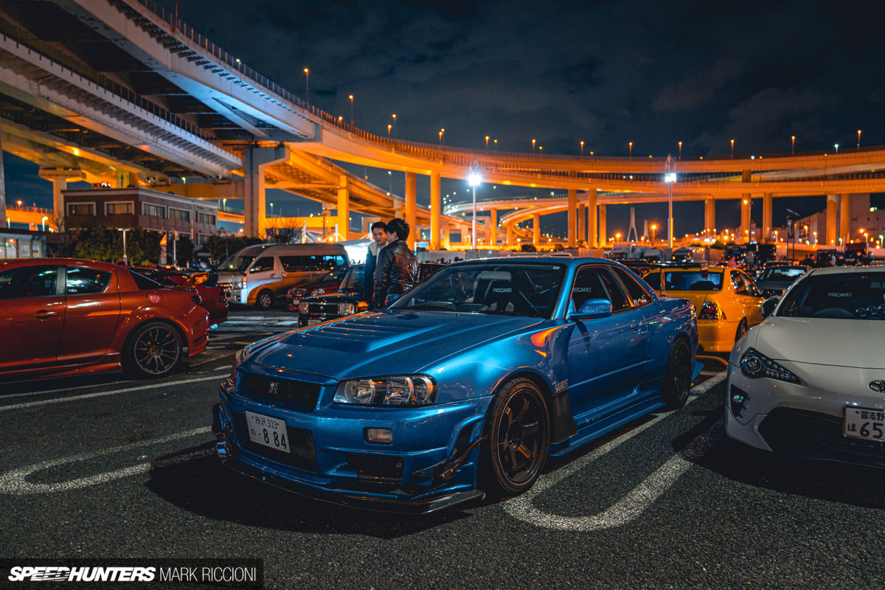
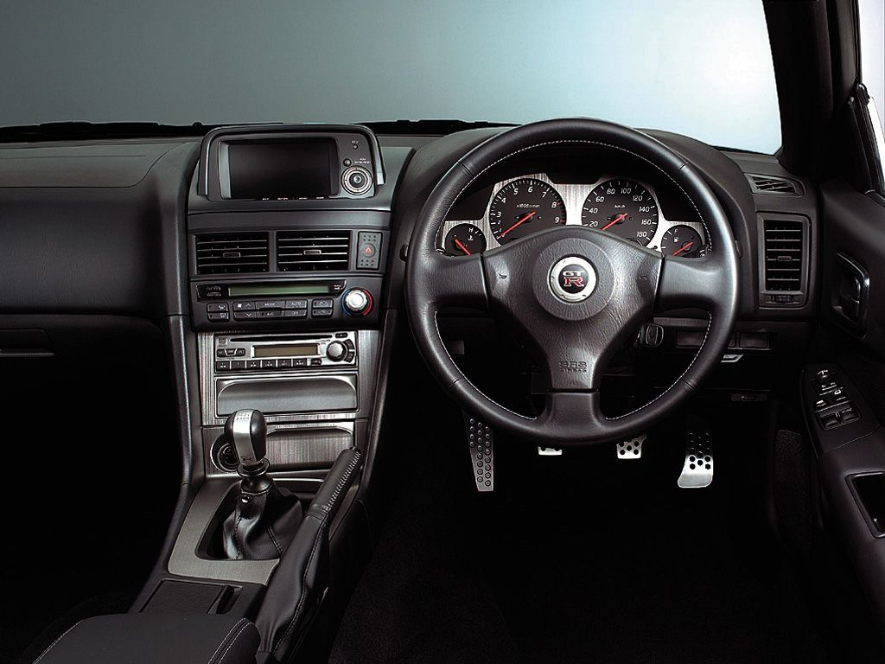
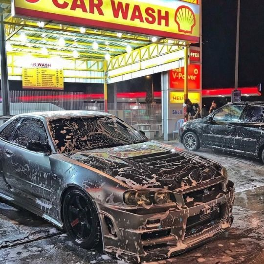

Hi I am John Christopher Rocafort.
Welcome to my Personal Website!
Hi, I am John Christopher Rocafort.
This is the about section. Here, you can learn more about me.
INTRODUCTION
Hello! I am a 20-year-old student in my second year at National University. Welcome to my world!
INTEREST
"I'm really into JDM cars because of their unique blend of performance, style, and reliability. The engineering precision and attention to detail in Japanese domestic market vehicles have always appealed to me. I love the iconic models that have become legends in the automotive world, like the Nissan Skyline GT-R, Toyota Supra, and the Mitsubishi Lancer Evolution 3 (Evo 3). The tuner culture around JDM cars is also a big draw for me—I enjoy the potential for upgrades and modifications. Plus, there's something about the design aesthetics that sets JDM cars apart. The racing heritage and the exclusive models that aren't widely available outside of Japan, like the Evo 3, add to the overall allure. It's not just about the cars themselves; it's about the entire culture and history that comes with them."
HOBBIES
"I absolutely love driving because it's more than just a means of transportation for me; it's an experience. The feeling of being behind the wheel, the hum of the engine, the grip of the steering wheel—I find it incredibly exhilarating. There's a sense of freedom and control that comes with navigating the open road. Whether it's the thrill of acceleration, the satisfaction of taking a perfectly executed corner, or simply enjoying the scenery on a long drive, each moment behind the wheel is unique. It's a way for me to clear my mind, unwind, and just enjoy the pure joy of driving. The connection between the driver and the machine, the road beneath the tires—it's a passion that goes beyond getting from point A to point B. It's about embracing the journey and savoring every moment on the road."
I really love car washing—it's more than just keeping my car clean; it's a therapeutic and rewarding experience. There's something about the process of carefully washing, detailing, and pampering my car that brings me joy. It's a hands-on activity that allows me to connect with my vehicle, paying attention to every curve and surface. The satisfaction of seeing the dirt and grime wash away, revealing the shine of the paint, is incredibly rewarding.

"I love playing video games because they offer a unique blend of entertainment, challenge, and immersion. It's a way for me to unwind and escape into different worlds, whether I'm exploring vast landscapes, solving intricate puzzles, or engaging in intense multiplayer battles. The storytelling in many games is as captivating as movies or books, and I enjoy being an active participant in these narratives. There's also a sense of accomplishment that comes with overcoming in-game challenges or achieving goals. Whether I'm playing solo or with friends, the social aspect adds another layer of enjoyment. Gaming is not just a hobby for me; it's a dynamic and interactive form of entertainment that allows me to experience creativity, skill, and camaraderie in a virtual setting."
Click here to download the PDF File of My Resume.


(+639636424726)
rocafortjc@students.nu-fairview.edu.ph
Made by: John Christopher C. Rocafort